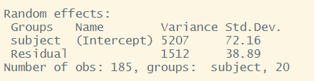
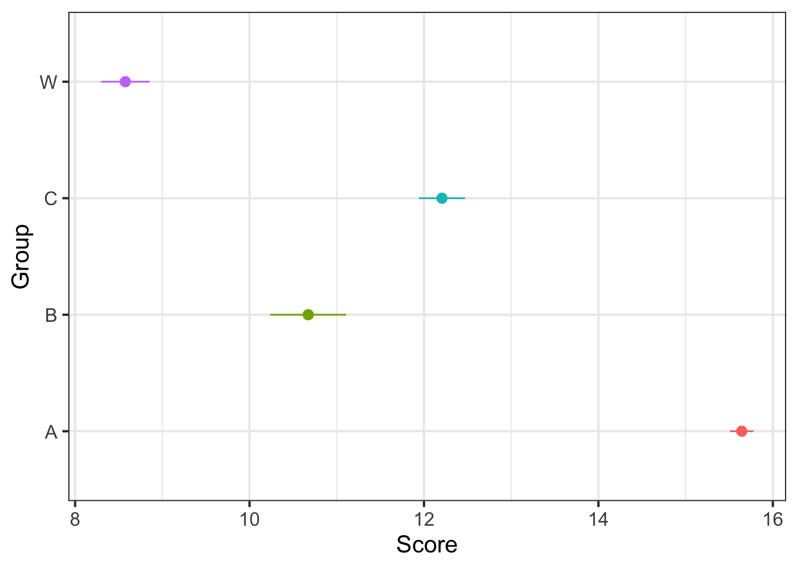
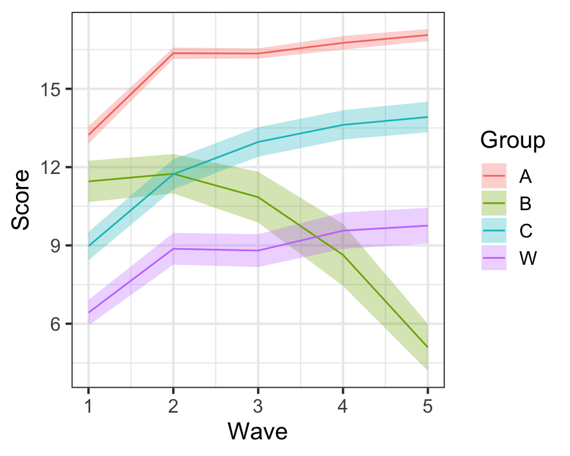
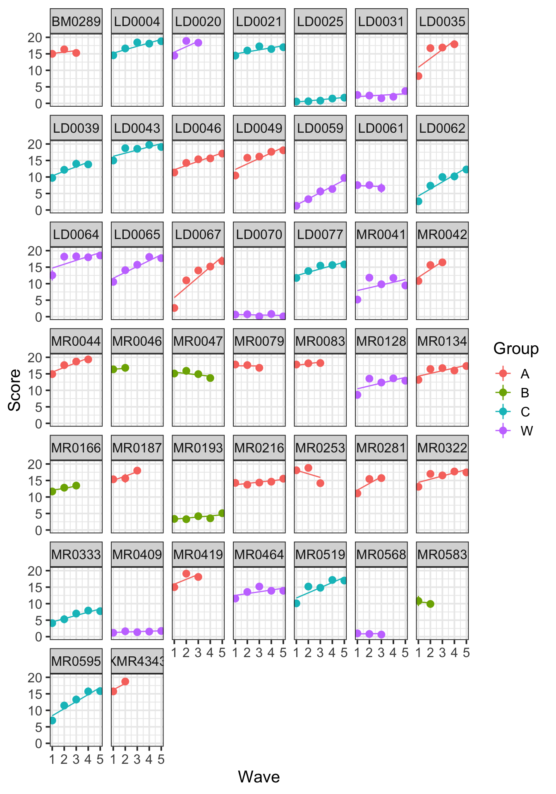

Multilevel Modelling Recap
Flashcards: lm to lmer
In a simple linear regression, there is only considered to be one source of random variability: any variability left unexplained by a set of predictors (which are modelled as fixed estimates) is captured in the model residuals.
Multi-level (or ‘mixed-effects’) approaches involve modelling more than one source of random variability - as well as variance resulting from taking a random sample of observations, we can identify random variability across different groups of observations. For example, if we are studying a patient population in a hospital, we would expect there to be variability across the our sample of patients, but also across the doctors who treat them.
We can account for this variability by allowing the outcome to be lower/higher for each group (a random intercept) and by allowing the estimated effect of a predictor vary across groups (random slopes).
Before you expand each of the boxes below, think about how comfortable you feel with each concept.
This content is very cumulative, which means often going back to try to isolate the place which we need to focus efforts in learning.
Formula:
- \(y_i = \beta_0 + \beta_1 x_i + \epsilon_i\)
R command:
lm(outcome ~ predictor, data = dataframe)
Note: this is the same as lm(outcome ~ 1 + predictor, data = dataframe). The 1 + is always there unless we specify otherwise (e.g., by using 0 +).
When our data is clustered (or ‘grouped’) such that datapoints are no longer independent, but belong to some grouping such as that of multiple observations from the same subject, we have multiple sources of random variability. A simple regression does not capture this.
If we separate out our data to show an individual plot for each subject, we can see how the fitted regression line from lm() is assumed to be the same for each subject.
By including a random-intercept term, we are letting our model estimate random variability around an average parameter (represented by the fixed effects) for the clusters.
Formula:
Level 1:
- \(y_{ij} = \beta_{0i} + \beta_{1i} x_{ij} + \epsilon_{ij}\)
Level 2:
- \(\beta_{0i} = \gamma_{00} + \zeta_{0i}\)
Where the expected values of \(\zeta_{0}\), and \(\epsilon\) are 0, and their variances are \(\sigma_{\zeta_{0}}^2\) and \(\sigma_\epsilon^2\) respectively. We will further assume that these are normally distributed.
We can now see that the intercept estimate \(\beta_{0i}\) for a particular group \(i\) is represented by the combination of a mean estimate for the parameter (\(\gamma_{00}\)) and a random effect for that group (\(\zeta_{0i}\)).
R command:
lmer(outcome ~ predictor + (1 | grouping), data = dataframe)
Notice how the fitted line of the random intercept model has an adjustment for each subject.
Each subject’s line has been moved up or down accordingly.
If you think about it, we might have done a similar thing with the tools we already had at our disposal, by using lm(y~x+subject).
This would give us a coefficient for the difference between each subject and the reference level intercept, or we could extend this to lm(y~x*subject) to give us an adjustment to the slope for each subject.
However, the estimate of these models will be slightly different:

Why? One of the benefits of multi-level models is that our cluster-level estimates are shrunk towards the average depending on
- the level of across-cluster variation and
- the number of datapoints in clusters.
Formula:
Level 1:
- \(y_{ij} = \beta_{0i} + \beta_{1i} x_{ij} + \epsilon_{ij}\)
Level 2:
- \(\beta_{0i} = \gamma_{00} + \zeta_{0i}\)
- \(\beta_{1i} = \gamma_{10} + \zeta_{1i}\)
Where the expected values of \(\zeta_0\), \(\zeta_1\), and \(\epsilon\) are 0, and their variances are \(\sigma_{\zeta_{0}}^2\), \(\sigma_{\zeta_{1}}^2\), \(\sigma_\epsilon^2\) respectively. We will further assume that these are normally distributed.
As with the intercept \(\beta_{0i}\), the slope of the predictor \(\beta_{1i}\) is now modelled by a mean \(\gamma_{10}\) and a random effect for each group (\(\zeta_{1i}\)).
R command:
lmer(outcome ~ predictor + (1 + predictor | grouping), data = dataframe)
Note: this is the same as lmer(outcome ~ predictor + (predictor | grouping), data = dataframe) . Like in the fixed-effects part, the 1 + is assumed in the random-effects part.
We can extract the fixed effects using the fixef() function:
These are the overall intercept and slope, \(\gamma_{00}\) and \(\gamma_{10}\).
fixef(random_slopes_model)## (Intercept) x1
## 405.790 -0.672
The plots below show the fitted values for each subject from each model that we have gone through in these expandable boxes (simple linear regression, random intercept, and random intercept & slope):
In the random-intercept model (center panel), the differences from each of the subjects’ intercepts to the fixed intercept (thick green line) have mean 0 and standard deviation \(\sigma_{\zeta_0}\). The standard deviation (and variance, which is \(\sigma_{\zeta_0}^2\)) is what we see in the random effects part of our model summary (or using the VarCorr() function).

In the random-slope model (right panel), the same is true for the differences from each subjects’ slope to the fixed slope.
We can extract the deviations for each group from the fixed effect estimates using the ranef() function.
These are the deviations from the overall intercept (\(\widehat \gamma_{00} = 405.79\)) and slope (\(\widehat \gamma_{10} = -0.672\)) for each subject \(i\).
ranef(random_slopes_model)## $subject
## (Intercept) x1
## sub_308 31.33 -1.4400
## sub_309 -28.83 0.4184
## sub_310 2.71 0.0599
## sub_330 59.40 0.3853
## sub_331 74.96 0.1739
## sub_332 91.09 -0.2346
## sub_333 97.85 -0.1906
## sub_334 -54.19 -0.5585
## sub_335 -16.90 0.9207
## sub_337 52.22 -1.1660
## sub_349 -67.76 -0.6844
## sub_350 -5.82 -1.2379
## sub_351 61.20 0.0550
## sub_352 -7.91 -0.6650
## sub_369 -47.64 -0.4681
## sub_370 -33.12 -1.1100
## sub_371 77.58 -0.2040
## sub_372 -36.39 -0.4583
## sub_373 -197.58 1.7990
## sub_374 -52.20 4.6051
##
## with conditional variances for "subject"
We can also see the actual intercept and slope for each subject \(i\) directly, using the coef() function.
coef(random_slopes_model)## $subject
## (Intercept) x1
## sub_308 437 -2.112
## sub_309 377 -0.254
## sub_310 409 -0.612
## sub_330 465 -0.287
## sub_331 481 -0.498
## sub_332 497 -0.907
## sub_333 504 -0.863
## sub_334 352 -1.231
## sub_335 389 0.248
## sub_337 458 -1.838
## sub_349 338 -1.357
## sub_350 400 -1.910
## sub_351 467 -0.617
## sub_352 398 -1.337
## sub_369 358 -1.140
## sub_370 373 -1.782
## sub_371 483 -0.876
## sub_372 369 -1.131
## sub_373 208 1.127
## sub_374 354 3.933
##
## attr(,"class")
## [1] "coef.mer"Notice that the above are the fixed effects + random effects estimates, i.e. the overall intercept and slope + deviations for each subject.
coef(random_intercept_model)## $subject
## (Intercept) x1
## sub_308 384 -0.914
## sub_309 407 -0.914
## sub_310 422 -0.914
## sub_330 492 -0.914
## sub_331 498 -0.914
## sub_332 496 -0.914
## sub_333 505 -0.914
## sub_334 339 -0.914
## sub_335 440 -0.914
## sub_337 417 -0.914
## sub_349 320 -0.914
## sub_350 356 -0.914
## sub_351 479 -0.914
## sub_352 380 -0.914
## sub_369 349 -0.914
## sub_370 335 -0.914
## sub_371 484 -0.914
## sub_372 361 -0.914
## sub_373 294 -0.914
## sub_374 511 -0.914
##
## attr(,"class")
## [1] "coef.mer"
The model fitted (or “model predicted”) values can be obtained using predict() (returning just the values) or broom.mixed::augment() (returning the values attached to the data that is inputted to the model).
To plot, them, we would typically like to plot the fitted values for each group (e.g. subject)
library(broom.mixed)
augment(random_slopes_model) %>%
ggplot(.,aes(x=x1, y=.fitted, group=subject))+
geom_line()
If we want to plot the fixed effects from our model, we have to do something else. Packages like sjPlot make it incredibly easy (but sometimes too easy), so a nice option is to use the effects package to construct a dataframe of the linear prediction accross the values of a predictor, plus standard errors and confidence intervals. We can then pass this to ggplot(), giving us all the control over the aesthetics.
library(effects)
ef <- as.data.frame(effect(term="x1",mod=random_slopes_model))
ggplot(ef, aes(x=x1,y=fit, ymin=lower,ymax=upper))+
geom_line()+
geom_ribbon(alpha=.3)
The quick and easy way to plot your random effects is to use the dotplot.ranef.mer() function in lme4.
randoms <- ranef(random_slopes_model, condVar=TRUE)
dotplot.ranef.mer(randoms)## $subjectSometimes, however, we might want to have a bit more control over our plotting, we can extract the estimates and correlations for each subject:
#we can get the random effects:
#(note that we use $subject because there might be other groupings, and the ranef() function will give us a list, with one element for each grouping variable)
randoms <-
ranef(random_slopes_model)$subject %>%
mutate(subject = row.names(.)) %>% # the subject IDs are stored in the rownames, so lets add them as a variable
pivot_longer(cols=1:2, names_to="term",values_to="estimate") # finally, let's reshape it for plotting
#and the same for the standard errors (from the arm package):
randoms_se <-
arm::se.ranef(random_slopes_model)$subject %>%
as.data.frame() %>%
mutate(subject = row.names(.)) %>%
pivot_longer(cols=1:2, names_to="term",values_to="se")
# join them together:
ranefs_plotting <- left_join(randoms, randoms_se)
# it's easier for plotting if we
ggplot(ranefs_plotting, aes(y=subject, x=estimate))+
geom_errorbarh(aes(xmin=estimate-2*se, xmax=estimate+2*se))+
facet_wrap(~term, scales="free_x")
Sometimes, data have a clear non-linear pattern, such as a curvilinear trend. In such case, it is reasonable to try modelling the outcome not as a linear function of the variable, but as a curvilinear function of it.
The following plots show data (as black dots) where the outcome \(y\) has a nonlinear and decreasing dependence on \(x\). That is, as \(x\) varies from 1 to 10, the outcome \(y\) decreases in a non-linear fashion. Superimposed to the same data, you can see a linear fit (red line) and a cubic fit (blue).
The residuals corresponding to each fit are:
Clearly, a linear fit doesn’t capture the real trend in the data, and any leftover systematic pattern that the model doesn’t explicity account for always ends up in the residuals as the red points show.
On the other hand, once we account for the nonlinear trend, that systematic pattern in the residuals disappears.
The secret is to use instead of \(x\) as a predictor, the corresponding polynomial up to a specific order:
\[ y = \beta_0 + \beta_1 x + \beta_2 x^2 + \beta_3 x^3 + \epsilon \]
Consider the following example data. You can add polynomials up to order 3, for example, of a predictor “time” by saying:
## # A tibble: 5 × 3
## subject reaction time
## <dbl> <dbl> <int>
## 1 1 0.428 1
## 2 1 0.427 2
## 3 1 0.211 3
## 4 1 0.585 4
## 5 1 0.127 5source("https://uoepsy.github.io/msmr/functions/code_poly.R")
code_poly(df, predictor = 'time', poly.order = 3, draw.poly = FALSE)## # A tibble: 5 × 7
## subject reaction time time.Index poly1 poly2 poly3
## <dbl> <dbl> <int> <dbl> <dbl> <dbl> <dbl>
## 1 1 0.428 1 1 -0.632 0.535 -3.16e- 1
## 2 1 0.427 2 2 -0.316 -0.267 6.32e- 1
## 3 1 0.211 3 3 0 -0.535 -4.10e-16
## 4 1 0.585 4 4 0.316 -0.267 -6.32e- 1
## 5 1 0.127 5 5 0.632 0.535 3.16e- 1and use those terms when specifying your linear model. We can, depending on how time is measured (e.g. if we have subjects over time) also include some (or all) of these terms as random effects, for example:
lmer(reaction ~ poly1 + poly2 + poly3 + (1 + poly1 | subject))
The same principle we have seen for one level of clustering can be extended to clustering at different levels (for instance, observations are clustered within subjects, which are in turn clustered within groups).
Consider the example where we have observations for each student in every class within a number of schools:

Question: Is “Class 1” in “School 1” the same as “Class 1” in “School 2”?
No.
The classes in one school are distinct from the classes in another even though they are named the same.
The classes-within-schools example is a good case of nested random effects - one factor level (one group in a grouping varible) appears only within a particular level of another grouping variable.
In R, we can specify this using:
(1 | school) + (1 | class:school)
or, more succinctly:
(1 | school/class)
Consider another example, where we administer the same set of tasks at multiple time-points for every participant.
Question: Are tasks nested within participants?
No.
Tasks are seen by multiple participants (and participants see multiple tasks).
We could visualise this as the below:

In the sense that these are not nested, they are crossed random effects.
In R, we can specify this using:
(1 | subject) + (1 | task)
Nested vs Crossed
Nested: Each group belongs uniquely to a higher-level group.
Crossed: Not-nested.
Note that in the schools and classes example, had we changed data such that the classes had unique IDs (e.g., see below), then the structures (1 | school) + (1 | class) and (1 | school/class) would give the same results.

This is a copy from what we saw in Week 2, but it is important, so here it is again!
The majority of the examples you have seen have been using likelihood ratio tests (using anova(model1, model2)) or using an approximation for the denominator degrees of freedom (the lmerTest package). But there are many other options, as detailed below (and this list is not remotely exhaustive).
For these examples…
For the following examples, we’re going to return to our dataset of various toys, and we are going to be concerned with whether practice (the hrs_week variable) is associated with changes in reading ages (R_AGE variable).
To accommodate for the clustered nature of the data, we are going to fit a model with both intercepts and slopes varying by toy-type.
toys_read <- read_csv("https://uoepsy.github.io/data/toyexample.csv")
full_model <- lmer(R_AGE ~ hrs_week + (1 + hrs_week | toy_type), data = toys_read)Remember that the \(t\) distribution starts to look more and more like the \(z\) (“normal”) distribution when degrees of freedom increase? We could just assume we have infinite degrees of freedom in our test statistics, and pretend that the \(t\)-values we get are actually \(z\)-values. This is “anti-conservative” inasmuch as it is not a very cautious approach, and we are likely to have a higher false positive rate (e.g. more chance of saying “there is an effect!” when there actually isn’t.)
coefs <- as.data.frame(summary(full_model)$coefficients)
coefs$p.z <- 2 * (1 - pnorm(abs(coefs[,3])))
coefs## Estimate Std. Error t value p.z
## (Intercept) 1.76 0.961 1.83 0.06768
## hrs_week 1.14 0.296 3.87 0.00011
There have been a couple of methods proposed to estimate the degrees of freedom in order to provide a better approximation to the null distribution of our tests. The way the Satterthwaite method has been implemented in R will just add a column for p-values to your summary(model) output).
Load the lmerTest package, refit the model, and voila!
library(lmerTest)
full_model <- lmer(R_AGE ~ hrs_week + (1 + hrs_week | toy_type), data = toys_read)
summary(full_model)$coefficients## Estimate Std. Error df t value Pr(>|t|)
## (Intercept) 1.76 0.961 16.2 1.83 0.08617
## hrs_week 1.14 0.296 17.5 3.87 0.00118Reporting
To account for the extra uncertainty brought by the inclusion of random effects in the model, the degrees of freedom in the coefficients tests have been corrected via Satterthwaite’s method.
…
…
Weekly hours of reading practice was associated increased reading age (\(\beta = 1.14,\ SE = 0.30,\ t(17.52^*) = 3.87,\ p = .001\)).
Note: if you have the lmerTest package loaded, then all the models you fit with lmer() will show p-values! If you want to stop this, then you will have to detach/unload the package, and refit the model.
detach("package:lmerTest", unload=TRUE)
The Kenward-Rogers approach is slightly more conservative than the Satterthwaite method, and has been implemented for model comparison between a full model and a restricted model (a model without the parameter of interest), using the KR adjustment for the denominator degrees of freedom in the \(F\)-test.
For this, models must be fitted with REML, not ML. The function KRmodcomp() will take care of this and re-fit them for you.
library(pbkrtest)
restricted_model <- lmer(R_AGE ~ 1 + (1 + hrs_week | toy_type), data = toys_read)
full_model <- lmer(R_AGE ~ hrs_week + (1 + hrs_week | toy_type), data = toys_read)
KRmodcomp(full_model, restricted_model)## large : R_AGE ~ hrs_week + (1 + hrs_week | toy_type)
## small : R_AGE ~ 1 + (1 + hrs_week | toy_type)
## stat ndf ddf F.scaling p.value
## Ftest 14.6 1.0 17.7 1 0.0013 **
## ---
## Signif. codes: 0 '***' 0.001 '**' 0.01 '*' 0.05 '.' 0.1 ' ' 1Reporting
To account for the extra uncertainty brought by the inclusion of random effects in the model, the denominator degrees of freedom in have been corrected via Kenward-Rogers’ method.
…
…
Inclusion of weekly hours of reading practice as a predictor was associated with an improvement in model fit (\(F(1,17.74^*) = 14.64,\ p = .001\)).
Conduct a model comparison between your model and a restricted model (a model without the parameter of interest), evaluating the change in log-likelihood.
Likelihood
“likelihood” is a function that associates to a parameter the probability (or probability density) of observing the given sample data.
In simpler terms, the likelihood is the probability of the model given that we have this data.
The intuition behind likelihood:
- I toss a coin 10 time and observed 8 Heads.
- We can think of a ‘model’ of the process that governs the coin’s behaviour in terms of just one number: a parameter that indicates the probability of the coin landing on heads.
I have two models:
- Model 1: The coin will land on heads 20% of the time. \(P(Heads)=0.2\)
- Model 2: The coin will land on heads 70% of the time. \(P(Heads)=0.7\)
- Given the data I observe (see 1, above), we can (hopefully) intuit that Model 2 is more likely than Model 1.
For a (slightly) more detailed explanation, see here.
This method assumes that the ratio of two likelihoods will (as sample size increases) become closer to being \(\chi^2\) distributed, and so may be unreliable for small samples.
Models must be fitted with ML, not REML. The function anova() will re-fit them for you.
restricted_model <- lmer(R_AGE ~ 1 + (1 + hrs_week | toy_type), data = toys_read)
full_model <- lmer(R_AGE ~ hrs_week + (1 + hrs_week | toy_type), data = toys_read)
anova(restricted_model, full_model, test = "Chisq")## refitting model(s) with ML (instead of REML)## Data: toys_read
## Models:
## restricted_model: R_AGE ~ 1 + (1 + hrs_week | toy_type)
## full_model: R_AGE ~ hrs_week + (1 + hrs_week | toy_type)
## npar AIC BIC logLik deviance Chisq Df Pr(>Chisq)
## restricted_model 5 660 675 -325 650
## full_model 6 651 668 -319 639 11.8 1 0.00059 ***
## ---
## Signif. codes: 0 '***' 0.001 '**' 0.01 '*' 0.05 '.' 0.1 ' ' 1Reporting
A likelihood ratio test indicated that the inclusion of weekly hours of reading practice as a predictor was associated with an improvement in model fit (\(\chi^2(1) = 11.81, p < .001\)).
There are also various “bootstrapping” methods which it is worth looking into. Think back to USMR when we first learned about hypothesis testing. Remember that we did lots of simulating data, so that we can compare what we actually observe with what we would expect if the null hypothesis were true? By doing this, we were essentially creating a null distribution, so that our calculating a p-value can become an issue of summarising data (e.g. calculate the proportion of our simulated null distribution that is more extreme than our observed statistic)
Instead of assuming that the likelihood ratio test statistics are \(\chi^2\)-distributed, we can bootstrap this test instead. This approach simulates data from the simpler model, fits both the simple model and the complex model and evaluates the change in log-likelihood. By doing this over and over again, we build a distribution of what changes in log-likelihood we would be likely to see if the more complex model is not any better. In this way it actually constructs a distribution reflecting our null hypothesis, against which we can then compare our actual observed effect
library(pbkrtest)
PBmodcomp(full_model, restricted_model, nsim=1000)Reporting
A parametric bootstrap likelihood ratio test (R = 1000) indicated that the inclusion of weekly hours of reading practice as a predictor was associated with an improvement in model fit (\(LRT = 11.79, p = .004\)).
Much the same as above, but with just one model we simulate data many times and refit the model, so that we get an empirical distribution that we can use to construct confidence intervals for our effects.
confint(full_model, method="boot") Reporting
95% Confidence Intervals were obtained via parametric bootstrapping with 1000 iterations.
…
…
Weekly hours of reading practice was associated increased reading age (\(\beta = 1.14,\ 95%\ CI\ [0.58 -- 1.73]\)).
It’s worth noting that there are many different types of bootstrapping that we can conduct. Different methods of bootstrapping vary with respect to the assumptions we will have to make when using them for drawing inferences. For instance, the parametric bootstrap discussed above assumes that explanatory variables are fixed and that model specification and the distributions such as \(\zeta_i \sim N(0,\sigma_{\zeta})\) and \(\varepsilon_i \sim N(0,\sigma_{\varepsilon})\) are correct.
An alternative is to generate a distribution by resampling with replacement from our data, fitting our model to the resample, and then repeating this over and over. This doesn’t have to rely on assumptions about the shape of the distributions of \(\zeta_i\) and \(\varepsilon_i\) - we just need to ensure that we correctly specify the hierarchical dependency of data. It does, however, require the decision of at which levels to resample.
full_model <- lmer(R_AGE ~ 1 + hrs_week + (1 + hrs_week | toy_type), data = toys_read)
library(lmeresampler)
fullmod_bs <-
bootstrap(full_model, # this is the model
.f = fixef, # we want the fixef from each bootstrap
type = "case", # case based bootstrap
B=2000, # do 2000 bootstraps
resample = c(TRUE, TRUE) # resample both toy_types and individual toys
)
confint(fullmod_bs, type = "perc")## # A tibble: 2 × 6
## term estimate lower upper type level
## <chr> <dbl> <dbl> <dbl> <chr> <dbl>
## 1 (Intercept) 1.76 -1.35 3.65 perc 0.95
## 2 hrs_week 1.14 0.633 2.03 perc 0.95Reporting
95% Confidence Intervals were obtained via case-based bootstrapping (resampling both toy types and individual toys) with 2000 iterations.
…
…
Weekly hours of reading practice was associated increased reading age (\(\beta\) = 1.144, 95% CI [0.633 – 2.032]).
If you want more information (not required reading for this course), then Julian Faraway has a page here with links to some worked examples, and Ben Bolker has a wealth of information on his GLMM FAQ pages.
Exercises: More Crossed Ranefs
Data: 11 Domain Tests
44 participants across 4 groups A, B, C, & W (between-subjects) were tested 5 times (waves) in 11 domains. In each wave, participants received a score (on a 20-point scale) for each domain and a set of questions which they answered either correctly or incorrectly.
The data can be accessed using the following code, and a description of the variables in the data can be found in the table below:
load(url("https://uoepsy.github.io/data/msmr_lab5.RData"))| variable | description |
|---|---|
| Anonymous_Subject_ID | Participant Identifier |
| IndivDiff | ?? (not sure but it’s not relevant for these questions!) |
| Wave | Study wave (timepoint), ranging from 1 to 5 |
| Domain | Domain tested (one of 11 domains studied, including things such as animals (ANI), objects (OBJ), toys (TOY), vehicles (VEH) |
| Correct | Number of questions answered correctly |
| Error | Number of questions answered incorrectly |
| Group | Group (between-participants), A, B, C, or W |
| Score | Score |
Did the groups differ in overall performance?
There are different ways to test this: use the 20-point score or the accuracy? Keep the domains separate or calculate an aggregate across all domains? Which way makes the most sense to you?
Make a plot that corresponds to the research question. Does it look like there’s a difference?
Lots of options for this one, here is one that shows Group differences:
ggplot(dat5, aes(Group, Score, color=Group)) +
stat_summary(fun.data=mean_se, geom="pointrange") +
guides(color="none")+
coord_flip()
And here is one that shows Group and Domain differences:
ggplot(dat5, aes(Domain, Score, color=Group)) +
stat_summary(fun.data=mean_se, geom="pointrange") +
coord_flip()And another:
library(ggridges)
ggplot(dat5, aes(x=Score,y=Domain,fill=Domain)) +
geom_density_ridges()+
facet_wrap(~Group)+
viridis::scale_fill_viridis(discrete=T,option = "plasma")Looks like there are group differences and domain differences, but not much in the way of group-by-domain differences.
Did the groups differ in overall performance?
Use a mixed-effects model to test the difference.
- Will you use a linear or logistic model?
- What should the fixed(s) effect be?
- What should the random effect(s) be? We have observations clustered by subjects and by domains - are they nested?
Tip: For now, we can forget about the longitudinal aspect to the data, because the research question is only concerned with overall performance.
We’re interested in the amount to which Groups vary in their overall performance, so we want a fixed effect of Group. Subjects and Domains are not nested - each subject sees different domains, and each domain is seen by multiple subjects.
# maximal model doesn't converge, removed random Group slopes for Domain
mod_grp <- lmer(Score ~ Group +
(1 | Anonymous_Subject_ID) +
(1 | Domain),
data=dat5, REML=FALSE)
summary(mod_grp)## Linear mixed model fit by maximum likelihood ['lmerMod']
## Formula: Score ~ Group + (1 | Anonymous_Subject_ID) + (1 | Domain)
## Data: dat5
##
## AIC BIC logLik deviance df.resid
## 10398 10438 -5192 10384 2004
##
## Scaled residuals:
## Min 1Q Median 3Q Max
## -5.025 -0.498 0.064 0.634 3.278
##
## Random effects:
## Groups Name Variance Std.Dev.
## Anonymous_Subject_ID (Intercept) 19.49 4.41
## Domain (Intercept) 1.06 1.03
## Residual 9.12 3.02
## Number of obs: 2011, groups: Anonymous_Subject_ID, 44; Domain, 11
##
## Fixed effects:
## Estimate Std. Error t value
## (Intercept) 15.83 1.12 14.12
## GroupB -4.16 2.26 -1.84
## GroupC -3.62 1.77 -2.05
## GroupW -7.27 1.67 -4.34
##
## Correlation of Fixed Effects:
## (Intr) GroupB GroupC
## GroupB -0.457
## GroupC -0.585 0.290
## GroupW -0.618 0.306 0.392Yes, substantial Group differences: overall, group A does the best, groups C and B next, and group W does the worst.
Did performance change over time (across waves)? Did the groups differ in pattern of change?
Make a plot that corresponds to the research question. Does it look like there was a change? A group difference?
ggplot(dat5, aes(Wave, Score, color=Group, fill=Group)) +
stat_summary(fun.data=mean_se, geom="ribbon", alpha=0.3, color=NA) +
stat_summary(fun.y=mean, geom="line")
Yes, looks like groups A, C, and W are improving, but it looks like group B is getting worse.
Did performance change over time (across waves)? Did the groups differ in pattern of change?
Use mixed-effects model(s) to test this.
Hint: Fit a baseline model in which scores change over time (wave), then assess improvement in model fit due to inclusion of overall group effect and finally the interaction of group with time.
Remember: If we’re using a likelihood ratio test to compare models (like we are here), then the models should be fitted with ML, not REML. anova(model1,model2) will re-fit them automatically for us, but we specify it specifically for each model here anyway:
mod_wv <- lmer(Score ~ Wave +
(1 + Wave | Anonymous_Subject_ID) +
(1 + Wave | Domain),
data=dat5, REML=FALSE,
lmerControl(optimizer = "bobyqa"))
mod_wv_grp <- lmer(Score ~ Wave+Group +
(1 + Wave | Anonymous_Subject_ID) +
(1 + Wave | Domain),
data=dat5, REML=FALSE,
lmerControl(optimizer = "bobyqa"))
mod_wv_x_grp <- lmer(Score ~ Wave*Group +
(1 + Wave | Anonymous_Subject_ID) +
(1 + Wave | Domain),
data=dat5, REML=FALSE,
lmerControl(optimizer = "bobyqa"))
anova(mod_wv, mod_wv_grp, mod_wv_x_grp)## Data: dat5
## Models:
## mod_wv: Score ~ Wave + (1 + Wave | Anonymous_Subject_ID) + (1 + Wave | Domain)
## mod_wv_grp: Score ~ Wave + Group + (1 + Wave | Anonymous_Subject_ID) + (1 + Wave | Domain)
## mod_wv_x_grp: Score ~ Wave * Group + (1 + Wave | Anonymous_Subject_ID) + (1 + Wave | Domain)
## npar AIC BIC logLik deviance Chisq Df Pr(>Chisq)
## mod_wv 9 9720 9770 -4851 9702
## mod_wv_grp 12 9710 9778 -4843 9686 15.35 3 0.0015 **
## mod_wv_x_grp 15 9710 9795 -4840 9680 5.81 3 0.1212
## ---
## Signif. codes: 0 '***' 0.001 '**' 0.01 '*' 0.05 '.' 0.1 ' ' 1summary(mod_wv_x_grp)## Linear mixed model fit by maximum likelihood ['lmerMod']
## Formula: Score ~ Wave * Group + (1 + Wave | Anonymous_Subject_ID) + (1 +
## Wave | Domain)
## Data: dat5
## Control: lmerControl(optimizer = "bobyqa")
##
## AIC BIC logLik deviance df.resid
## 9710 9795 -4840 9680 1996
##
## Scaled residuals:
## Min 1Q Median 3Q Max
## -5.005 -0.576 0.005 0.613 3.752
##
## Random effects:
## Groups Name Variance Std.Dev. Corr
## Anonymous_Subject_ID (Intercept) 22.3660 4.729
## Wave 0.7479 0.865 -0.34
## Domain (Intercept) 2.0533 1.433
## Wave 0.0219 0.148 -0.99
## Residual 6.0686 2.463
## Number of obs: 2011, groups: Anonymous_Subject_ID, 44; Domain, 11
##
## Fixed effects:
## Estimate Std. Error t value
## (Intercept) 12.7728 1.2493 10.22
## Wave 1.2547 0.2389 5.25
## GroupB -1.3648 2.4745 -0.55
## GroupC -4.1467 1.9166 -2.16
## GroupW -6.3185 1.8166 -3.48
## Wave:GroupB -1.1423 0.5292 -2.16
## Wave:GroupC -0.0369 0.3686 -0.10
## Wave:GroupW -0.5089 0.3547 -1.43
##
## Correlation of Fixed Effects:
## (Intr) Wave GroupB GroupC GroupW Wv:GrB Wv:GrC
## Wave -0.412
## GroupB -0.444 0.175
## GroupC -0.574 0.226 0.290
## GroupW -0.605 0.239 0.306 0.395
## Wave:GroupB 0.157 -0.436 -0.389 -0.102 -0.108
## Wave:GroupC 0.225 -0.625 -0.114 -0.366 -0.155 0.282
## Wave:GroupW 0.234 -0.650 -0.118 -0.153 -0.370 0.293 0.421
Using broom.mixed::augment() for the model with a Wave*Group interaction, plot the average (stat_summary() perhaps?) model fitted values for each group across Waves. Add in the observed data too.
broom.mixed::augment(mod_wv_x_grp) %>%
ggplot(., aes(Wave, Score, color=Group)) +
stat_summary(fun.data=mean_se, geom="pointrange") +
stat_summary(aes(y=.fitted), fun=mean, geom="line")
We fit a linear model, but the model fit lines are not straight lines. Why is that?
Create individual subject plots for the data and the model’s fitted values. Will these show straight lines?
Hint: make use of facet_wrap() to create a different panel for each level of a grouping variable.
broom.mixed::augment(mod_wv_x_grp) %>%
ggplot(., aes(Wave, Score, color=Group)) +
facet_wrap(~ Anonymous_Subject_ID) +
stat_summary(fun.data=mean_se, geom="pointrange") +
stat_summary(aes(y=.fitted), fun.y=mean, geom="line")The individual subject plots show linear fits, which is a better match to the model. But now we see the missing data – some participants only completed the first few waves.
Make a plot of the actual (linear) model prediction.
Hint: Use the effect() function from the effects package.
library(effects)
ef <- as.data.frame(effect("Wave:Group", mod_wv_x_grp))
ggplot(ef, aes(Wave, fit, color=Group, fill=Group)) +
geom_ribbon(aes(ymax=fit+se, ymin=fit-se), color=NA, alpha=0.1) +
geom_line()
What important things are different between the plot from question A7 and that from question A5? (You can see the plots we created for these questions below).
Why do you think these two plots differ?
The reason is visible here:
Group B was not actually getting worse. The appearance that it was getting worse is an artifact of selective drop-out: there’s only a few people in this group and the better-performing ones only did the first few waves so they are not represented in the later waves, but the worse-performing ones are contributing to the later waves. The model estimates how the better-performing ones would have done in later waves based on their early-wave performance and the pattern of performance of other participants in the study.
summary(mod_wv_x_grp)$coefficients## Estimate Std. Error t value
## (Intercept) 12.7728 1.249 10.224
## Wave 1.2547 0.239 5.253
## GroupB -1.3648 2.474 -0.552
## GroupC -4.1467 1.917 -2.164
## GroupW -6.3185 1.817 -3.478
## Wave:GroupB -1.1423 0.529 -2.159
## Wave:GroupC -0.0369 0.369 -0.100
## Wave:GroupW -0.5089 0.355 -1.435Note that the Group A slope (coefficient for Wave) is 1.255 and, relative to that slope, the Group B slope is -1.142 (coefficient for Wave:GroupB). This means that the model-estimated slope for Group B is 0.112, which is very slightly positive, not strongly negative as appeared in the initial plots.
One of the valuable things about mixed-effects (aka multilevel) modeling is that individual-level and group-level trajectories are estimated. This helps the model overcome missing data in a sensible way. In fact, MLM/MLR models are sometimes used for imputing missing data. However, one has to think carefully about why data are missing. Group B is small and it might just be a coincidence that the better-performing participants dropped out after the first few waves, which would make it easier to generalize the patterns to them. On the other hand, it might be the case that there is something about the study that makes better-performing members of Group B drop out, which should make us suspicious of generalizing to them.
Create a plot of the subject and domain random effects. Notice the pattern between the random intercept and random slope estimates for the 11 domains - what in our model is this pattern representing?
randoms <- ranef(mod_wv_x_grp, condVar=TRUE)
dotplot.ranef.mer(randoms)## $Anonymous_Subject_ID##
## $DomainNotice that the domains with the lower relative intercept tend to have a higher relative slope (and vice versa). This is the negative correlation between random intercepts and slopes for domain in our model:
VarCorr(mod_wv_x_grp)## Groups Name Std.Dev. Corr
## Anonymous_Subject_ID (Intercept) 4.729
## Wave 0.865 -0.34
## Domain (Intercept) 1.433
## Wave 0.148 -0.99
## Residual 2.463Try removing the correlation (hint: use the ||) to see what happens. Does it make sense that these would be correlated? (Answer: we don’t really know enough about the study, but it’s something to think about!)
Less Guided Exercise
Instead of step-by-step questions, this exercise is designed to get you thinking more, giving you practice for the report and for your future research. If it helps, you can find a (sort of) checklist for multilevel models here (but please be aware that there is no ‘one-size-fits-all’ approach - this checklist may not always be appropriate for every research question with multi-level data)
How does aggressive behaviour change over adolescence? How is this change dependent upon whether or not a child has siblings?
Data: Aggressive Behaviour in Adolescence
Data was collected from 30 secondary schools across Scotland. A cohort of students were followed up every year from the age of 12 to 19. Each year, they completed the Aggressive Behaviour Scale (ABS). Data was also captured on the number of siblings each child had.
The data can be accessed from https://uoepsy.github.io/data/schoolsabs.csv . A description of the variables can be found in the table below.
| variable | description |
|---|---|
| schoolid | School Identifier |
| ABS | Score on the Aggressive Behaviour Scale (Z-scored) |
| year | Age (in years) of child at observation |
| childid | Within-School Child Identifier |
| siblings | Sibling status (No/Yes) |
absdat <- read_csv("https://uoepsy.github.io/data/schoolsabs.csv")Let’s start by just exploring the data a bit more.
## [1] 30## [1] 500We have 500 students from 30 different schools. Schools tend to have data from about 17 children. Some schools have data from as few as 13 children, some have data from as many as 20.
absdat %>%
group_by(schoolid) %>%
summarise(
nchildren = n_distinct(childid)
) %>% summaryNote that the childid variable does not uniquely identify each child. We need to also know which school child “1” comes from.
absdat %>% count(schoolid,childid) %>% select(n) %>% tableWe can see that for some children we have fewer than the 7 observations: some have 6, 5, 4, or 3.
There are lots of different ways we can cut up the data to plot it
ggplot(absdat, aes(x = year, y = ABS,col=siblings)) +
stat_summary(geom="pointrange",aes(group=siblings),alpha=.5)+
stat_summary(geom="line",aes(group=siblings),alpha=.5)+
labs(title="Average ABS scores over age by number of siblings", x = "Age", y = "Aggressive Behaviour Score")ggplot(absdat, aes(x = year, y = ABS,col=siblings)) +
stat_summary(geom="pointrange",aes(group=schoolid),alpha=.2)+
stat_summary(geom="line",aes(group=schoolid),alpha=.2)+
labs(title="School level mean ABS scores", x = "Age", y = "Aggressive Behaviour Score")ggplot(absdat, aes(x = year, y = ABS,col=siblings)) +
stat_summary(geom="line",aes(group=interaction(schoolid,childid)),alpha=.2)+
facet_wrap(~siblings, labeller = label_both) +
labs(title="Children's trajectories of ABS scores",x = "Age", y = "Aggressive Behaviour Score")Now let’s think a bit about the various considerations that go into fitting a multi-level model.
- We can group our data by whether or not they have siblings, by school, and by child.
- We’re specifically interested in differences between the levels of the
siblingsvariable, so that is going to be in our fixed effects.
- We’re not interested in drawing inferences about specific schools or specific children. The schools and children in our dataset in this case are just a random sample of the wider population of schools and children. They will account for some variability in the outcome (e.g. some children are more aggressive than others, maybe some schools tend to have more aggressive children in them than others). So our model wants to account for this, but we don’t want to specifically estimate differences. These will be our random effects.
- Schools and children is one of the most obvious cases of nested random effects. Each child belongs to one, and only one school. This means we are going to want to model the structure
(1 | School / Child).
- The
childidvariable does not uniquely identify a single child. It just says “1”,“2”, etc. But child 1 from school 1 is a different child from child 1 in school 2. We need to remember this, and if we want to separate out our random effects of school and child, then we’ll need(1 | School) + (1 | Child:School).
Alternatively, we could make a new child identifier variable that does uniquely identify each child.
- Along with being interested in differences between having/not-having siblings, we’re also interested in change over time. From our initial plotting, we see there is some curvature present, and this is most apparent in the group of children with siblings. Are we interested in differences between sibling groups at the first timepoint (age 12?). Possibly? This depends a lot on the research field.
- We know that effects of time can vary by child, and so also by school. Children don’t change in whether or not they have siblings (well, they might, not often), so we can’t really think of “the effect of having siblings on aggressive behaviours for child \(i\)” because child \(i\) always has the same number of siblings. However, within a school, some children have siblings, some don’t, so it might be that this effect can vary by-school.
source("https://uoepsy.github.io/msmr/functions/code_poly.R")
absdat <- code_poly(absdat, "year", poly.order = 2, orthogonal = T, draw.poly = F)
basemod <-
lmer(ABS ~ poly1 + poly2 + (1 + poly1 + poly2 | schoolid/childid),
data = absdat,
control = lmerControl(optimizer = "bobyqa"))
isSingular(basemod)## [1] TRUEbasemod <-
lmer(ABS ~ poly1 + poly2 + (1 + poly1 | schoolid) +
(1 + poly1 + poly2 | childid:schoolid),
data = absdat,
control = lmerControl(optimizer = "bobyqa"))Let’s use effects coding for siblings, so that our estimated coefficients for poly1 and poly2 represent the average.
# we'll put yes first, because when we use contr.sum, it will set the last level to -1
absdat$siblings <- factor(absdat$siblings, levels=c("yes","no"))
contrasts(absdat$siblings) <- contr.sum(2)
contrasts(absdat$siblings)## [,1]
## yes 1
## no -1linmod <-
lmer(ABS ~ siblings*poly1 + poly2 + (1 + poly1 | schoolid) +
(1 + poly1 + poly2 | childid:schoolid),
data = absdat,
control = lmerControl(optimizer = "bobyqa"))
quadmod <-
lmer(ABS ~ siblings*(poly1 + poly2) + (1 + poly1 | schoolid) +
(1 + poly1 + poly2 | childid:schoolid),
data = absdat,
control = lmerControl(optimizer = "bobyqa"))
anova(basemod,linmod,quadmod)## Data: absdat
## Models:
## basemod: ABS ~ poly1 + poly2 + (1 + poly1 | schoolid) + (1 + poly1 + poly2 | childid:schoolid)
## linmod: ABS ~ siblings * poly1 + poly2 + (1 + poly1 | schoolid) + (1 + poly1 + poly2 | childid:schoolid)
## quadmod: ABS ~ siblings * (poly1 + poly2) + (1 + poly1 | schoolid) + (1 + poly1 + poly2 | childid:schoolid)
## npar AIC BIC logLik deviance Chisq Df Pr(>Chisq)
## basemod 13 8034 8113 -4004 8008
## linmod 15 8015 8106 -3992 7985 22.97 2 1e-05 ***
## quadmod 16 8016 8114 -3992 7984 0.65 1 0.42
## ---
## Signif. codes: 0 '***' 0.001 '**' 0.01 '*' 0.05 '.' 0.1 ' ' 1Let’s get some bootstrapped confidence intervals around our parameter estimates. This may take quite a while to run.
confint(quadmod, method="boot")| term | est | 2.5 % | 97.5 % |
|---|---|---|---|
| (Intercept) | 0.011 | -0.145 | 0.158 |
| SiblingsY (Y=1,N=-1) | -0.060 | -0.103 | -0.025 |
| Age (linear) | 0.526 | 0.259 | 0.800 |
| Age (quadratic) | -0.197 | -0.260 | -0.135 |
| SiblingsY:Age(lin) | -0.202 | -0.315 | -0.092 |
| SiblingsY:Age(quad) | -0.025 | -0.085 | 0.038 |
Aggressive behaviour scores show an increase over time (linear increase 0.526, 95% CI [0.259 – 0.8]), which gets more gradual as adolescence progresses (quadratic term -0.197 [-0.26 – -0.135]). Overall, having siblings was associated with lower scores on the Aggressive Behaviour Scale ( \(\beta\) = -0.06 [-0.103 – -0.025]), and showed less increase with age ( \(\beta\) = -0.202 [-0.315 – -0.092]). There was no evidence for the quadratic change over time being dependent upon sibling-status. The model fitted values and data are presented in Figure 1 below.
broom.mixed::augment(quadmod) %>%
ggplot(.,aes(x=poly1, col=siblings))+
stat_summary(aes(y=ABS),geom="pointrange", alpha=.5)+
stat_summary(aes(y=.fitted),geom="line")+
scale_x_continuous("age", breaks=poly(12:18,2)[,1], labels=c(12:18))Figure 1: Means and standard errors for ABS scores over age (points), along with average model fitted values (lines)